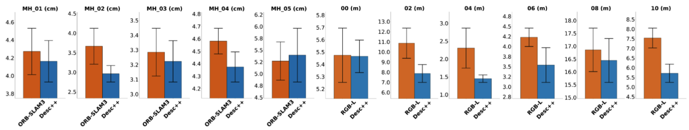

Desc++: Efficient Descriptor Enhancement for Data Association in Existing Visual SLAM Systems
Desc++ Enhanced ORB Comparison


Abstract
Reliable visual data association is fundamental to visual SLAM (V-SLAM), as it directly determines the quality of the camera pose estimation and map consistency. However, the handcrafted descriptors used by most mature real-time systems degrade under illumination and viewpoint changes, while learning-based front-ends that address this weakness typically require replacing the extraction-and-matching pipeline and introduce substantial computational overhead. Descriptor enhancement offers a compromise by refining existing descriptors within their original format, yet current methods rely on simplified attention mechanisms whose limited contextual modeling constrains the achievable matching quality. To resolve this trade-off between contextual expressiveness and efficiency, we propose Desc++, a lightweight enhancement module that jointly encodes descriptor representations and keypoint geometry and aggregates spatial context through a hybrid architecture that combines order-agnostic global attention with geometry-aware sequential modeling in linear time. The enhanced descriptors retain their original dimensionality and matching interface, enabling integration into deployed V-SLAM systems without modifying the pipeline. Experiments across descriptor matching, correspondence analysis, and system-level benchmarks with four different V-SLAM systems demonstrate that Desc++ improves matching accuracy over the state-of-the-art enhancement method, translates these gains into more accurate and stable trajectory estimation, and achieves a favorable balance between accuracy and efficiency for practical integration into existing real-time V-SLAM pipelines.
Desc++ Overview

Model Performance

Descriptor Enhancement Comparison
Public SLAM Benchmarks
